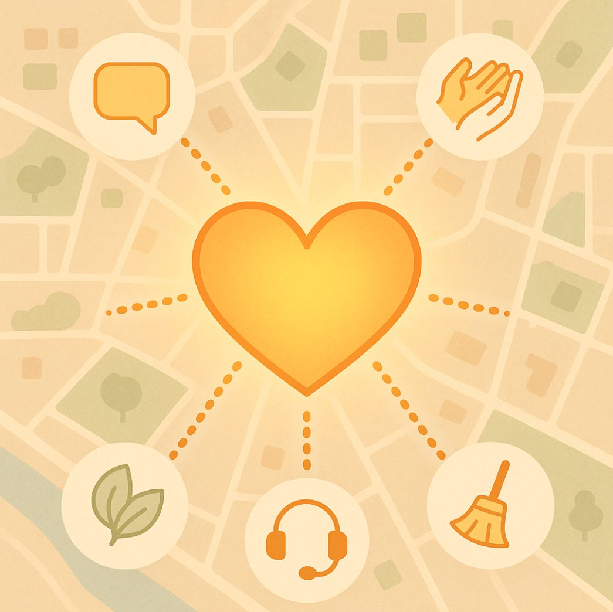
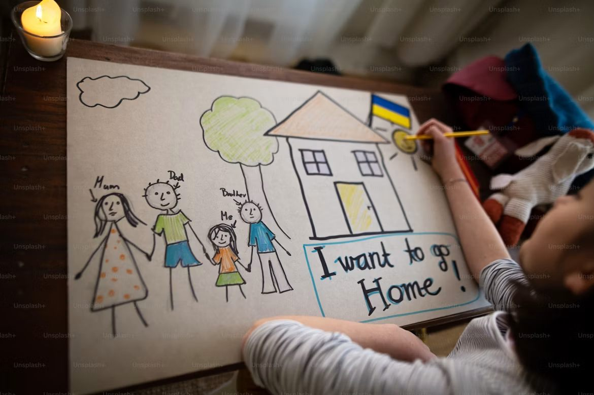
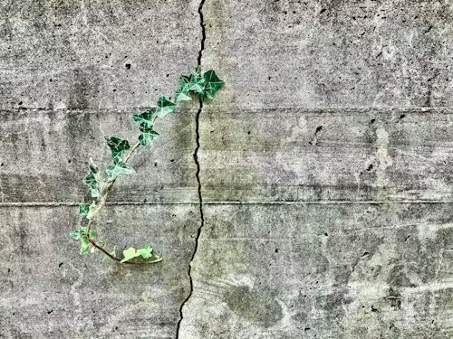
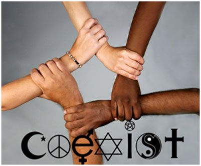
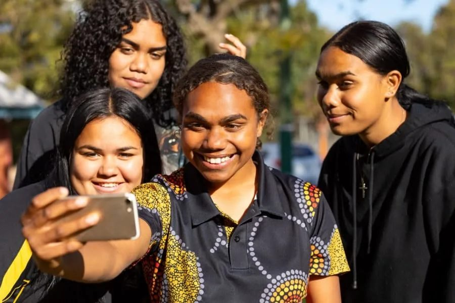
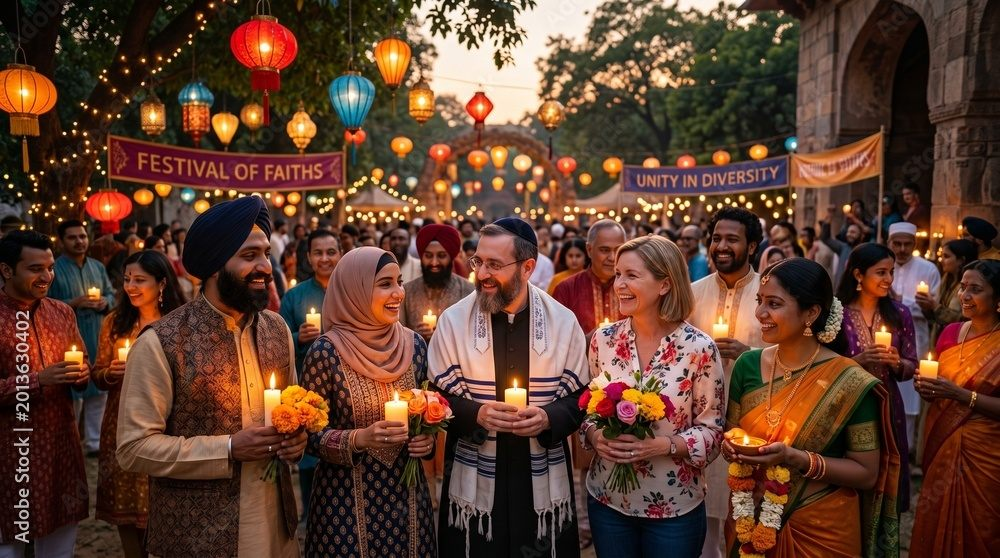

This day is an important reminder that hope should be a part of your life every day!
The International Day of Hope (12 July) also reminds us that hope is not only a personal virtue—it is a collective responsibility. “There is no peace without hope.”
“Children are not the people of tomorrow, but people today. They are entitled to be taken seriously. They have the right to be treated by adults with tenderness and respect, as equals. They should be allowed to grow into whoever they were meant to be - The unknown person inside each of them is the hope for the future.” Korczak, J.


In a world facing growing unrest, widening social divisions, and persistent economic and environmental challenges, the global community continues to seek values that unite rather than divide. Among these, hope stands out as a deeply powerful and universally resonant force. Recognising this, the United Nations General Assembly has designated 12 July as the International Day of Hope—a day to celebrate and promote hope as a guiding principle for individuals, communities, and nations alike.


The declaration of the International Day of Hope is more than symbolic—it is a global invitation to act. It calls on Member States, regional and international bodies, civil society, and individuals to cultivate environments where hope can thrive. These efforts may include public education, awareness campaigns, community outreach, acts of kindness, and the promotion of forgiveness and reconciliation. By embracing these values, societies can foster inclusion, empathy, and resilience.

Ultimately, this day is a reminder that even in difficult times, hope remains a transformative force. It can bridge divides, drive progress, and uplift the human spirit. The International Day of Hope invites all of us to pause, reflect, and recommit to a future built not on despair or division, but on shared humanity and the unwavering belief in a better tomorrow.
At a time when people and communities are facing persistent challenges, hope can be a guiding principle to help inspire actions for a better world. Hope is very powerful when accompanied by actions of kindness and by building understanding of who and what you don’t know much about. Behaving in ways that show care and respect can also contribute to the greater good.
